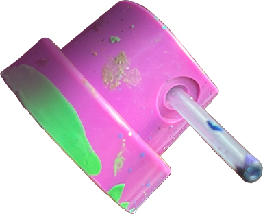
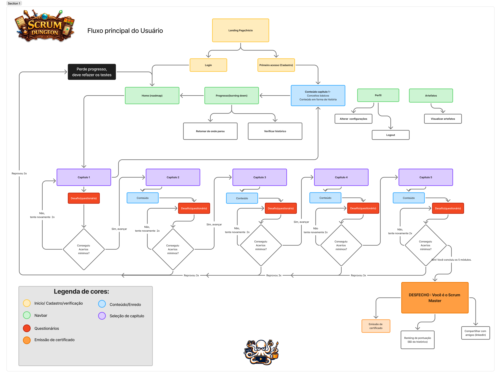

Em breve
Projetos em destaque
SOBRE MIM
Minha Trajetória.
01 / 04
Da rua para o design.
Minha relação com o processo criativo começou nas artes visuais, principalmente através da tatuagem, ilustração e graffiti. Foi onde comecei a explorar composição, cor, identidade e diferentes formas de comunicar visualmente.
Selecione uma imagem para percorrer minha trajetória.


MAPA DE HABILIDADES
Design, código e processo.
Explore as áreas para conhecer as ferramentas e conhecimentos que fazem parte da minha trajetória.
Desenvolvimento
Design & UX
Processo & Arquitetura
VISÃO GERAL
Um repertório multidisciplinar.
Minha experiência combina desenvolvimento, design e processos, permitindo transitar entre a concepção visual de uma solução, sua estrutura e sua implementação.
2021 — 2023
FORMAÇÃO ACADÊMICA
Design de Produto
Universidade Anhembi Morumbi
2022 — 2023
FORMAÇÃO COMPLEMENTAR
Motion Design Publicitário
Motion Insider
2024
FORMAÇÃO COMPLEMENTAR
UX Design
Projeto Desenvolve — Grupo Boticário + Alura
2026 — 2028
FORMAÇÃO ATUAL
Desenvolvimento de Software Multiplataforma
FATEC Jacareí
Processo criativo
Do primeiro rascunho ao código.
Esboço
Ideias começam no papel, explorando possibilidades, referências e diferentes caminhos para a solução.
PROJETO 01 · ACADÊMICO · 1DSM · 1º SEM. 2026
Scrum Dungeon
O PROJETO
Scrum Dungeon é uma plataforma gamificada criada para ensinar os conceitos e práticas da metodologia Scrum através de uma experiência inspirada em RPG.
MEU PAPEL
Atuei como Product Owner, fazendo a comunicação com o cliente e auxiliando na definição e priorização do backlog. Também participei da prototipação, criação dos fluxos, identidade visual, desenvolvimento front-end, arquitetura e funcionalidades do back-end.
TECNOLOGIAS
HTML · CSS · JavaScript · EJS · Node.js · Express · PostgreSQL · Figma
SPRINT 01
Planejar
Na primeira Sprint estruturamos as bases do projeto. Definimos o fluxo da experiência, casos de uso, prototipação e arquitetura, além de alinharmos a organização da equipe dentro da metodologia Scrum.
REGISTROS DA SPRINT
01 / 03

Foi muito divertido contribuir em todas as etapas desse projeto, aplicando o método Scrum enquanto pensávamos em como construir uma experiência imersiva que ensinasse sobre o próprio método.
Trabalhar em uma grande equipe foi desafiador e só foi possível graças à nossa organização, comunicação e muita adaptação.
O aprendizado que fica é sobre saber priorizar as demandas, manter a transparência e trabalhar em coletivo.
ARQUITETURA E DESENVOLVIMENTO
Estrutura pensada para crescer com o projeto.
Devido ao tamanho e à complexidade do projeto, organizamos o back-end de forma modular, separando responsabilidades por domínio.
Dentro de cada módulo, aplicamos uma arquitetura em camadas, com Controllers, Services e Repositories bem definidos, separando o fluxo das requisições, as regras de negócio e o acesso aos dados.
A aplicação utiliza renderização com EJS, banco de dados PostgreSQL e um fluxo de versionamento baseado em Git Flow e Pull Requests.